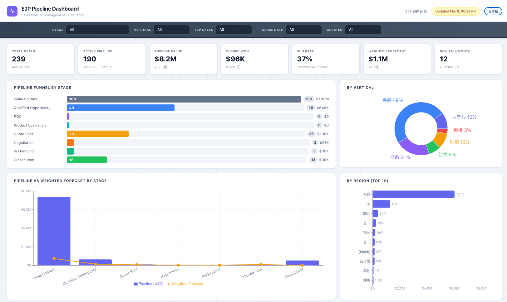

EJP Sales Pipeline Dashboard
開發紀錄
業務人員靠 AI 協作，從一份 Google Sheets 出發，在幾天內建出正式部署的銷售管道視覺化儀表板。

為什麼要做這件事
EJP Japan 的業務 pipeline 資料散落在 Google Sheets 裡。每次開會都要手動整理數字、截圖貼到 PPT，沒有人能一眼看出哪個 Stage 的案件最多、哪個業務的 Pipeline 最健康。
不是不想用現成工具（Salesforce、HubSpot），而是：
- IT 採購流程太長，今天需要的明年才批
- 分公司規模小，付整套 CRM 的費用不合理
- 最重要的是：資料就在 Google Sheets 裡，只差一個能看的介面
所以目標很清楚：做一個 POC，證明「這件事值得繼續投資」，而不是先說服管理層、排預算、等 IT。
技術選型
每個工具的選擇都只有一個標準：AI 最熟悉、最能幫我的，而不是「業界最好的」。
| 工具 | 選的理由 |
|---|---|
| Next.js | AI 最熟悉、前後端一起搞定、Vercel 原生支援 |
| Recharts | React 生態裡圖表最好用，不用額外學新框架 |
| Google Sheets API | 資料就在那裡，Service Account 幾分鐘接好，不需要建資料庫 |
| Vercel | 推 GitHub 就部署、免費方案夠用、URL 直接給管理層看很專業 |
| Tailwind CSS | 沒有設計稿也能寫出看得過去的 UI，AI 對 Tailwind 的掌握最穩 |
| Radix UI | Dropdown、Modal 這類互動元件不用自己造輪子 |
推進方式
整個過程不是「我想到什麼 AI 就做什麼」，而是把現有的 Google Sheets 當成規格書，讓 AI 逼近這個已知的正確答案。
具體做法：先把 Sheets 的欄位名稱、Stage 值、資料格式全部告訴 AI，然後逐步要求它把每個欄位正確地對應到介面上。每加一個功能，都先確認資料有沒有正確讀進來，再確認圖表顯示對不對。
任務拆解的順序大概是這樣：
- 先有一個能跑的骨架（API 讀 Sheets，前端顯示一個表格）
- 再加圖表（Funnel、Bar、Pie 一個個加）
- 再加互動（Filter、搜尋、語言切換）
- 再加保護（登入頁、Middleware）
- 最後加交付物（提案網頁、IT 申請文件）
每個階段都先讓它動起來，再優化細節。不試圖一次到位。
踩到的坑，讓我更懂的事
症狀：Contact、Qualified、Evaluation、Quote 這幾個 Stage 的圖表全是 0，但 Sheets 裡明明有資料。
這個問題讓我理解了一件事：程式碼裡有兩套 Stage 名稱在同時存在，它們必須完全一致。Google Sheets 裡的原始值是 "1 - Contact"，程式用 normalizeStage() 把它轉成 "Contact"。但常數設定檔裡的 key 還是舊的 "Initial Contact"，永遠對不到，所以查表結果是 0。
症狀：Pipeline Stage 圖的某幾個 Stage Bar 太窄，數字被塞進去卻看不見，視覺上就像那個 Stage 沒有標籤。
根本問題是：標籤預設放在 Bar 裡面，但當 Bar 的寬度小於一定比例時，文字就超出邊界或被截掉了。解法是判斷 Bar 寬度，太窄就把標籤移到 Bar 右邊。
症狀：提案網頁的中文 / 日文切換時，某個包含子元素的容器，切換後裡面的 HTML 結構消失了。
原因是：data-ja 屬性被加在一個有子元素的容器上，語言切換時 JS 直接覆蓋了整個 innerHTML，子元素當然也一起消失。
data-ja 只能加在「裡面只有純文字、沒有其他子元素」的節點上。否則切換語言 = 刪掉結構。
Activity Log 與 Last Updated
POC 功能穩定後，管理層最在意的問題是：「這個案子最後是什麼時候更新的？業務有在跟嗎？」
為什麼不直接加一欄讓業務填日期
最初的想法是加一欄「最後更新時間」讓業務手動填。但人一定會忘記填。所以改用 Apps Script 的 onEdit trigger——只要業務編輯了 Pipeline 的任何欄位，R 欄自動寫入當前時間。零操作負擔。
Activity Log 的設計思路
備註欄有另一個問題：業務更新時會直接覆蓋舊的內容，歷史就不見了。跟 AI 討論了幾種方案後，選了共用 Activity Log sheet：
| 方案 | 做法 | 問題 |
|---|---|---|
| 同一格往下加 | 在 Notes 欄用日期前綴換行寫 | 格式混亂、容易誤刪 |
| 每人一份 Log sheet | 每個業務有自己的紀錄表 | 管理層看不到全貌 |
| 共用 Activity Log | 全部人寫同一張表，用 author 欄區分 | ✅ 最簡單、Dashboard 好讀 |
Google Sheets 端的巧思
Activity Log 有 5 欄，但業務只操作其中 2 欄（選案件名 + 寫備註），其他全自動：
| 欄 | 內容 | 來源 |
|---|---|---|
| A | Deal Name | Dropdown（可打字搜尋） |
| B | Date | Apps Script 自動填 |
| C | Deal ID | INDEX/MATCH 公式自動帶 |
| D | Sales Rep | INDEX/MATCH 公式自動帶 |
| E | Note | 業務手動填 |
症狀：在 Apps Script 編輯器裡按 ▶️ 測試 onEdit，結果報 TypeError: Cannot read properties of undefined (reading 'source')。
原因：onEdit(e) 是事件觸發的，手動執行時沒有 event 物件。正確的測試方式是直接回到 Google Sheets 編輯儲存格。
onEdit 不能手動測試，只能透過實際編輯觸發。
症狀：業務在 Activity Log 新增了一筆，但 Pipeline 大表的 Last Updated 還是空的。
原因：onEdit 只監聽被編輯的那張 sheet。解法不在 Google Sheets 端，而是在 Dashboard 端合併——讀取兩邊的日期，取較新的那個。
最終樣貌
儀表板本體（ejp-pipeline-dashboard.vercel.app）：
- 密碼保護（全站 Middleware 守衛），不知道密碼的人看不到任何東西
- 7 個 KPI 卡：總案件數、活躍案件、Pipeline 總額、Closed Won、勝率、加重預測、當月新增
- 6 張圖表：Pipeline by Stage funnel、Vertical 分布、Stage vs 加重預測、地區 Top 10、業務員 Pipeline 排行、案件來源
- 案件列表：搜尋 + 多維篩選 + 點開看詳情 Modal + 表頭鎖定
- Activity Timeline：DealModal 內顯示該案件的所有歷史備註，按時間倒序
- Updated filter：在 Deal List 內篩選最近更新的案件（3/7/14/30 天 + Inactive）
- Deal ID 模糊搜尋：
EJP002和EJP-002都能找到同一筆 - Model Summary tab：所有 Model 的 QTY、單價、Standard Value 彙總；含月份分布 pivot（Model × 月份），支援 Close/Deploy Date 切換、季度小計
- Sales Rep Summary tab：業務員 × 月份 pivot，案件數數字可點擊帶 filter 跳回 Deal List
- 日本地圖：地區案件熱點視覺化
- 英 / 日雙語切換，基本 RWD（手機可用，平板以上最佳）
配套交付物（同步部署在 Vercel）：
/proposal.html— 分公司導入說明（繁中 / 日文雙語，附系統架構說明與存取控制方案）/it-request.html— IT 部門 Azure App Registration 申請文件，含 SSO 長期方案說明docs/sharepoint-deployment-guide.md— 開發者遷移指南（Google Sheets → SharePoint，約 60 行改動）
Google Sheets 端：
- Pipeline sheet（A:R，18 欄）：R 欄
last_updated由 Apps Script 自動填 - Activity Log sheet（A:E，5 欄）：Dropdown + INDEX/MATCH + Protect，業務只需操作 2 欄
- Price List sheet（A:C）：產品型號與單價對照
- Settings sheet：JPY 匯率
如果繼續往下
- 資料來源遷移（等待 POC 確認中）：Google Sheets 是 POC 用的，分公司確認後接 SharePoint。程式架構已預留好，換一個
lib/sharepoint.js就搞定，其他不動。IT 申請文件已備妥。 - 存取控制升級：目前是共用密碼，長期應接 Microsoft SSO，只有公司帳號才能進。IT 申請文件已備妥，等 POC 驗證後的自然下一步。
- Activity Log 進階：目前 Activity Log 是手動填的，未來可以考慮讓 Dashboard 直接新增備註（需要 Google Sheets API 的寫入權限）。
- 定期 Email Report：把儀表板每週快照自動寄給管理層，讓不登入的人也能收到資訊。
這個案例展示了什麼思路
不是「我要做一個儀表板」然後從零開始設計，而是「我有一份 Sheets，我要讓它變得可見」——把已知的正確答案當起點，讓 AI 逐步逼近它。這個方式的效率遠高於從需求文件開始，因為 AI 不需要猜你要什麼，它只需要比對和實作。
Activity Log 的決策過程
這次跟 AI 的討論模式是「先問需求、再問方案、再問取捨」。AI 建議不上 Supabase 的理由很清楚——資料量不大、業務流程還在 Google Sheets 上、多加一層同步只會增加維護負擔。這個「不做什麼」的決策，跟「做什麼」一樣重要。
可移植性
Google Sheets 的 Data Validation + INDEX/MATCH + Apps Script + Protect range 組合，可以套用在任何「多張 sheet 需要連動、但不想搬到資料庫」的場景。Activity Log 的設計模式（選名稱 → 自動帶其他欄位 → 鎖定公式欄）在 CRM、專案管理、客服紀錄等場景都能直接複製。
如果你也要做，先問 AI 什麼
- → 「我的 Google Sheets 有一張主表和一張紀錄表，我希望紀錄表選了案件名後自動帶出 ID 和負責人，要怎麼設定 Data Validation 和 INDEX/MATCH？」
- → 「我想在 Dashboard 上顯示每個案件的最新更新時間，但更新可能來自不同的 sheet，Dashboard 端要怎麼合併？」